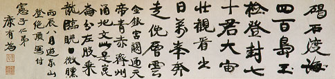

義助慰安婦
—— 李敖百件珍藏義賣藝術品（第11件）
品 名： A11. 康有為遊泰山詩橫幅 預估價： 100 萬 成交價： （保留） 說 明： 本件作品是大名鼎鼎「戊戌政變」第一男主角康有為先生於丙辰年（1916）登泰山絕頂時寫給伍憲子的一首七言律詩，氣勢磅礡有力；而以毛筆寫魏碑的方式表現，亦別具一格。「登泰山而小天下」，由於孔子這一句話，使得古代讀書人喜好登泰山；而古代天子也要到泰山「登封」與老天爺打交道，中國歷史上有七十二位皇帝均登過泰山。康有為與包世臣同為清朝二位著名的書法理論家；包世臣著有《藝舟雙楫》，康有為則著有《廣藝舟雙楫》。依李敖的看法：兩位只能被稱為書法理論家；其書法作品，嚴格說並非上乘之作。
